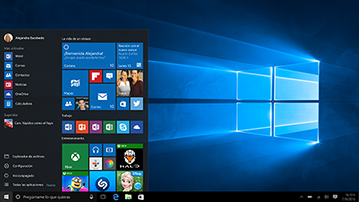

Es el sistema operativo más reciente desarrollado por Microsoft.
A principios de 2015 llega Windows 10. Gracias al programa Windows Insider, Microsoft pone las primeras versiones a disposición del sistema a disposición de los fanáticos. Todos los dispositivos del mundo están conectados y comparten contenido a velocidades sin comparación. De esta manera, Windows 10 convierte la colaboración en una tarea fácil y agradable.
Windows Insider tiene una función importante ya que hace de Windows 10 un producto excelente. Aquellas personas inscritas en este programa inspeccionan las distintas versiones y las comentan dando su opinión para que Microsoft proporcione soluciones como respuesta a los comentarios de sus clientes.

Menú de inicio de Windows 10
Ir a...
Inicio